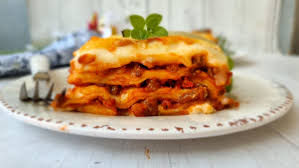

Inicio
Receta de lasaña

Descripción
La lasaña es un plato tradicional de la cocina italiana elaborado con capas de pasta, salsa de carne, salsa bechamel y queso. Es una preparación cremosa, sabrosa y gratinada al horno, ideal para compartir en familia o en ocasiones especiales.
Ingredientes
- 12 láminas de lasaña
- 500 g de carne molida de vacuno
- 1 cebolla picada
- 2 dientes de ajo picados
- 500 ml de salsa de tomate
- 500 ml de salsa bechamel
- 300 g de queso mozzarella rallado
- 100 g de queso parmesano rallado
- 2 cucharadas de aceite
- Sal al gusto
- Pimienta al gusto
- Orégano al gusto
Paso a paso
- Cocina las láminas de lasaña según las instrucciones del envase y resérvalas (si no son precocidas).
- Calienta el aceite en una sartén y sofríe la cebolla junto con el ajo hasta que estén transparentes.
- Agrega la carne molida y cocina hasta que se dore completamente.
- Incorpora la salsa de tomate, sal, pimienta y orégano. Cocina a fuego medio durante 10 a 15 minutos.
- Precalienta el horno a 180 °C.
- En una fuente para horno, coloca una capa de salsa de carne, luego una capa de láminas de lasaña, una capa de salsa bechamel y una capa de queso mozzarella.
- Repite el proceso hasta completar todas las capas.
- Finaliza con salsa bechamel, queso mozzarella y queso parmesano por encima.
- Hornea durante 35 a 40 minutos, hasta que la superficie esté dorada y burbujeante.
- Deja reposar 10 minutos antes de cortar y servir para que las capas se mantengan firmes. ¡Buen provecho!